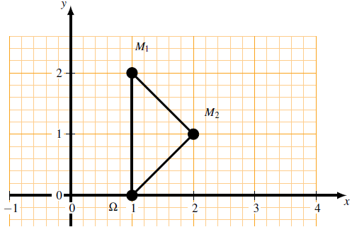
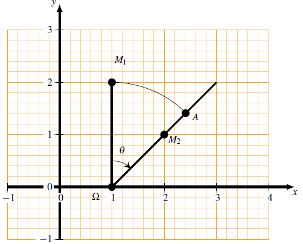
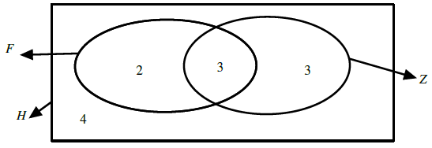
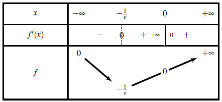
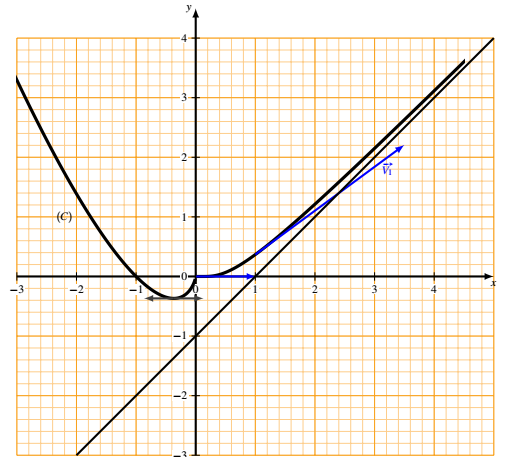

Série D (Sciences Expérimentales) — Mathématiques
Soit $F$ la transformation du plan $\mathcal{P}$ associée à l’application $f$ définie de la manière suivante :
1) Donner la nature et les éléments caractéristiques de la transformation $F$
2) On considère une suite de points $(M_n )_{n\in \mathbb{N}}$ du plan tels que $M_n=F(M_{n-1} )$.
Soit $F$ la transformation du plan $\mathcal{P}$ associée à l’application $f$ définie de la manière suivante :
1) Donnons la nature et les éléments caractéristiques de la transformation $F$.
L'application complexe $f$ associe à $F$ est de la forme $f(z) = az+b $ avec $a =\frac{1}{2}\left(1-i\right) $ et $b =\frac{1}{2}+\frac{1}{2}i$.
Comme $a =\frac{1}{2}\left(1-i\right) \in \mathbb{C}^{*}$, alors $F$ is une similitude plane directe.
Soit $\theta =arg(a)$, alors :
Soit $\Omega$ tel que $z_\Omega = \frac{b}{1-a}$.
Donc les éléments caractéristiques de $F$ sont le rapport $k =\frac{\sqrt{2}}{2}$, l'angle $\theta = -\frac{\pi}{4} \left[2\pi\right]$ et le centre $\Omega(1 ; \, 0)$
2) On considère une suite de points $(M_n )_{n\in \mathbb{N}}$ du plan tels que $M_n=F(M_{n-1} )$.
a) Donnons une construction géométrique du point $M_2=F(M_1 )$ tel que $M_1 \left(1 , \, 2 \right)$ en prenant pour unité $2cm$.
Le triangle $\Omega M_1M_2$ est un triangle rectangle et isocèle en $M_2$.

Autre construction géométrique: utilisation de la décomposition de $F$.
On sait que $F$ est une similitude plane directe de rapport $k =\frac{\sqrt{2}}{2}$, d'angle $\theta = -\frac{\pi}{4} \left[2\pi\right]$ et de centre $\Omega(1 ; \, 0)$.
Donc est la composée de l'homothétie de centre $\Omega$ et de rapport $k$ et de la rotation de centre $\Omega$ et de d’angle $\theta$ .
Soit $A$ et $A^\prime$ deux points :
$F = HoR : M_1\stackrel{R }{\longmapsto }A\stackrel{H}{\longmapsto }M_2$

b) Calculons les coordonnées du point $M_0$.
$M_1 = F(M_0) \Rightarrow z_1 = \frac{1}{2}(1-i)z_0+\frac{1}{2}+\frac{i}{2} \Rightarrow (1-i)z_0+1+i = 2z_1 = 2(1+2i) = 2+4i$
Donc $M_0(1 , \, -2)$.
c) Donnons la nature de la transformation $F^4=FoFoFoF$ .
L'application complexe associée à $F^4$ est $f^4$. $f^4$ est définie par : $\forall z \in \mathbb{C}$, $f^4(z) = f^2\left(f^2(z) \right)$.
$f^2(z) = f(f(z))=f\left( \frac{1}{2}\left(1-i\right) z+\frac{1}{2}+\frac{i}{2}\right)= \frac{1}{2}\left(1-i\right) \left( \frac{1}{2}\left(1-i\right) z+\frac{1}{2}+\frac{i}{2}\right) +\frac{1}{2}+\frac{i}{2}$
$\Rightarrow f^4(z) = \frac{1}{4}\left(1-2i-1\right) z+\frac{2}{4}+\frac{1}{2}+\frac{i}{2}= -\frac{1}{2}i z+1+\frac{i}{2}$.
Donc $f^4(z) = f^2\left(-\frac{1}{2}i z+1+\frac{i}{2}\right)=-\frac{1}{2}i \left( -\frac{1}{2}i z+1+\frac{i}{2}\right) +1+\frac{i}{2}=-\frac{1}{4} z-\frac{1}{2}i+\frac{1}{4}+1+\frac{i}{2}=-\frac{1}{4}z+\frac{5}{4}$. Ainsi $\forall \ z \in \mathbb{C}$, $f^4(z) =-\frac{1}{4}z+\frac{5}{4}$.
Comme $a = -\frac{1}{4} \in \mathbb{R}^*\ \{1\}$, alors $F^4$ est une homothétie de centre $\Omega( 1\: ; \: 0)$ et de rapport $k = -\frac{1}{4}$.
Déduisons-en les coordonnées du point $M_4$.
$M_4 =F(M_3) =F(F(M_2))=F^2(F(M_1))=F^3(F(M_0)) \Rightarrow M_4 =F^4(M_0)$.
Donc $z_4= -\frac{1}{4}z_0+\frac{5}{4} = -\frac{1}{4}\left(-1+2i\right)+\frac{5}{4} = \frac{1}{4}-\frac{2}{4}i+\frac{5}{4}=\frac{6}{4}-\frac{1}{2}i=\frac{3}{2}-\frac{1}{2} i$.
Ainsi $z_4 = \frac{3}{2}-\frac{1}{2}i$. D'où $M_4 \left(\frac{3}{2} \: ; \: -\frac{1}{2} \right)$.
Au Niger, une conférence réunit 12 commerçants. Tous parlent haoussa, 5 parlent foulfouldé, 6 parlent zarma 3 foulfouldé et zarma.
On choisit au hasard et simultanément 3 personnes.
Chaque groupe de 3 personnes a la même probabilité d’être choisi.
1) a) Quelle est la probabilité pour que ces 3 personnes parlent au moins une autre langue que le haoussa ?
b) Quelle est la probabilité pour que ces 3 personnes ne parlent que le haoussa ?
2) Soit $X$ la variable aléatoire qui à chaque groupe de 3 personnes associe le nombre de personnes parlant foulfouldé et zarma.
3) a) Déterminer la loi de probabilité de $X$.
b) Calculer la probabilité pour qu’il ait au moins 2 personnes parlant foulfouldé et zarma.
NB : les résultats seront donnés sous forme de fractions irréductibles .
Soit $\Omega$ l'univers associé à l'expérience aléatoire.
Comme on a choisit au hasard et simultanément 3 personnes, alors $\Omega$ est l'ensemble des parties de 3 personnes parmi 12. Donc $Card\Omega = C_{12}^{3}$.
Aussi, comme chaque groupe de 3 personnes a la même probabilité d'être choisi on est dans le cas de l'équiprobabilité.
Soit $F$ l'ensemble des personnes qui parlent le foulfoudé; $H$ l'ensemble des personnes qui parlent le haoussa et $Z$ l'ensemble des personnes qui parlent zarma. On a le diagramme de Venn suivant.

1) a) Déterminons la probabilité pour que ces 3 personnes parlent au moins une autre langue que le haoussa.
Soit $A$ l'événement : « les 3 personnes parlent au moins une autre langue que le haoussa».
D'après le diagramme de Venn, les personnes qui parlent au moins une autre langue que le haoussa sont au nombre de $8$, donc $CardA = C_{8}^{3}$. Ainsi $P(A) = \frac{CardA}{Card\Omega} = \frac{56}{220} = \frac{14}{55}$.
b) Déterminons la probabilité pour que ces 3 personnes ne parlent que le haoussa.
Soit $B$ l'événement : « les 3 personnes ne parlent que le haoussa».
D'après le diagramme de Venn, les personnes qui ne parlent que le haoussa sont au nombre de $4$, donc $CardB = C_{4}^{3}$. D'où $P(B) = \frac{CardB}{Card\Omega} = \frac{4}{220} = \frac{1}{55}$ soit $P(B) = \frac{1}{55}$.
2) Soit $X$ la variable aléatoire qui à chaque groupe de 3 personnes associe le nombre de personnes parlant foulfouldé et zarma.
3) a) Déterminons la loi de probabilité de $X$.
Le nombre de personnes qui parlent à la fois le foulfouldé et le zarma sont nombres de $3$, donc l'ensemble des valeurs prises par $X$ est $X(\Omega) = \{ 0 ; \, 1; \, 2 ; 3 \: \}$. D'où :
On résume cette loi de probabilité de $X$ dans le tableau ci-après
| $k$ | $0$ | $1$ | $2$ | $3$ |
|---|---|---|---|---|
| $P(X = k)$ | $\frac{21}{55}$ | $\frac{27}{55}$ | $\frac{27}{220}$ | $\frac{1}{220}$ |
b) Calculons la probabilité pour qu’il ait au moins 2 personnes parlant foulfouldé et zarma.
$P(X \geq 2) = P(X=2)+P(X=3) = \frac{27}{220}+\frac{1}{220} = \frac{28}{220} = \frac{7}{55}$.
Donc la probabilité pour qu’il ait au moins 2 personnes parlant foulfouldé et zarma est égale à $\frac{7}{55}$.
I . Soit $f$ la fonction numérique de la variable réelle $x$ définie par :
1) La fonction $f$ est-elle continue, dérivable au point $x_0=0$ ?
La fonction $f$ est-elle continue sur $\mathbb{R}$ ?
2) Étudier les variations de la fonction $f$
3) Soit $(C)$ le graphe de $f$ dans un repère orthonormé $\left(O, \vec{i}, \vec{j}\right)$ avec $\left\| \, \vec{i} \, \right\|=\left\| \ \vec{j} \, \right']=2 cm$.
Démontrer que la droite d’équation $ y=x-1$ est asymptote à la courbe $(C)$ quand $x$ tend vers $+\infty$.
Que se passe-t-il quand $x$ tend vers $-\infty$ ?
Donner les équations de demi-tangentes à la courbe $(C)$ au point $O$ d’abscisse $x_0=0$.
Soit $A$ le point d’intersection de la courbe $(C)$ et de l’axe $x ' o x$ , différent du point $O$.
Donner l’équation de la tangente en $A$ à $(C)$.
Construire le graphe $(C)$ de $f$.
II . Soit $E$ le domaine défini par : $\begin{cases} - 1 \leq x \leq 0\\[0.2cm] f(x) \leq y \leq 0 \end{cases}$
Nous nous proposons de calculer l’aire $A(E)$ de ce domaine.
1) Pour cela, calculer auparavant l’aire du domaine $E_\lambda$ définie par : $\begin{cases} - 1 \leq x \leq \lambda\\[0.2cm] f(x) \leq y \leq 0 \end{cases}$ avec $-1\leq \lambda\leq 0$.
2) En déduire l’aire $A(E)$.
III . Soit un point matériel $M$ en mouvement dans le plan rapporté à un repère $\left(O, \vec{i}, \vec{j}\right)$ dont la position à l’instant $t$ est définie par : $\begin{cases} x = -\frac{1}{\mathrm{Log}(t)}\\[0.2cm] y = -\frac{t}{\mathrm{Log}(t)} \end{cases}$ $t \in ]0 \, , \, 1[$.
1) Que fait le point $M$ lorsque $t$ tend vers $0$ ?
Au point $t = 0$, on suppose donc que le point $M$ est en $O(0 ,0)$.
2) Démontrer que pour tout $t \in ]0 \, , \, 1[$, la trajectoire $(\Gamma)$ du point $M$ est une partie du graphe $(C)$ que l’on précisera.
3) Déterminer le vecteur vitesse $\overrightarrow{V}(t)$ à l’instant $t$ et construire le vecteur $\overrightarrow{V_1}(t)$ au point $ t_1 =\frac{1}{e}$.
4) Donner l’équation de la tangente $D$ en $M_1$ à $(\Gamma)$ à la date $t_1$.
I. Soit $f$ la fonction numérique de la variable réelle $x$ définie par :
$D_f =\Big]0\: ; \: +\infty\Big[\cup\Big]0\: ; \: -\infty\Big[\cup\Big\{\: 0\: \Big\} = \Big]-\infty\: ; \: +\infty\Big[ = \mathbb{R}$.
1) ❋ Vérifions si la fonction $f$ est continue au point $x_0=0$.
$\displaystyle \lim_{ x \rightarrow 0^+}f(x) = \lim_{ x \rightarrow 0}x e^{-\frac{1}{x}}$. Posons $X=-\frac{1}{x}$. Alors $x=-\frac{1}{X}$ et quand $x$ tend vers $0^+$, $X$ tend vers $-\infty$.
Donc $\displaystyle \lim_{ x \rightarrow 0^+}f(x) = \lim_{ x \rightarrow -\infty} -\frac{1}{X}\times e^X = 0\times 0=0$.
$\displaystyle \lim_{ x \rightarrow 0^-}f(x) = \lim_{ x \rightarrow 0^-}\left(-x \mathrm{ Log}|x|\right)=0$.
Ainsi $\displaystyle \lim_{ x \rightarrow 0}f(x) = \lim_{ x \rightarrow 0}f(x) = f(0) = 0$.
D'où $f$ est continue au point $x_0 = 0$.
❋ Vérifions si la fonction $f$ est dérivable au point $x_0 = 0$.
$\displaystyle \lim_{ x \rightarrow 0^+}\left(\frac{f(x)-f(0)}{x-0}\right)= \lim_{ x \rightarrow 0^+} \left(\frac{xe^{-\frac{1}{x}}}{x} \right)=\lim_{ x \rightarrow 0^+}\left(e^{-\frac{1}{x}} \right)= 0$ car $\displaystyle \lim_{ x \rightarrow 0^+} -\frac{1}{x} = -\infty$.
Donc la fonction $f$ est dérivable à droite en $x_0 = 0$.
$\displaystyle \lim_{ x \rightarrow 0^-}\left(\frac{f(x)-f(0)}{x-0}\right) = \lim_{ x \rightarrow 0^-}\left(\frac{-x \mathrm{ Log}|x|-0}{x} \right)=\lim_{ x \rightarrow 0^-}\left(-\mathrm{ Log}|x|\right)=-(-\infty)=+\infty$, donc la fonction $f$ n'est pas dérivable à gauche en $x_0 = 0$.
Comme la fonction $f$ est dérivable à droite mais n'est pas dérivable à gauche au point $x_0 = 0$, alors la fonction $f$ n'est pas dérivable au point $x_0 = 0$.
❋ Vérifions si la fonction $f$ est continue sur $\mathbb{R}$.
Pour $x \in ]0\: ; \: +\infty[$, $f(x) = x e^{-\frac{1}{x}}$. Sur cet intervalle $f$ est continue car elle est le produit et composée des fonctions qui sont continues sur $]0 ; \, +\infty[$. De même, sur $]-\infty; \, 0[$, $f(x) = -x \mathrm{ Log}|x|$ est une fonction qui y est continue car elle est le produit et composée de fonctions qui le y sont. De plus $f$ est continue en $x_0 = 0$.
D'où $f$ est continue sur $\mathbb{R}$
2) Étudions les variations de la fonction $f$.
❋ Pour $x \in ]0 \: ; \: +\infty[$, $f(x) = x e^{-\frac{1}{x}}$.
La fonction $f$ est dérivable sur $ ]0 \: ; \:+\infty[$ et pour tout $x \in ]0 \: ; \: +\infty[$, on a: $f^\prime(x) = 1\times e^{-\frac{1}{x}}+x\times \left(-\frac{1}{x}\right)^\prime e^{-\frac{1}{x}}=e^{-\frac{1}{x}}+x \times \frac{1}{x^2}e^{-\frac{1}{x}}=e^{-\frac{1}{x}}+\frac{1}{x}e^{-\frac{1}{x}}= \left(\frac{x+1}{x} \right)e^{-\frac{1}{x}}$.
Ainsi $f^\prime(x) = \left(\frac{x+1}{x} \right)e^{-\frac{1}{x}}>0$ car $x \in ]0 \: ; \: +\infty[$. Donc $f$ est strictement croissante sur $ ]0 \: ; \: +\infty[$.
❋ Si $x \in ]-\infty \: ; \: 0[$, $f(x) = -x \mathrm{ Log}|x|$.
La fonction $f$ est dérivable sur $ ]-\infty\: ; \: 0[$ and pour tout tout $x \in ]-\infty \: ; \: 0[$, on a : $f^\prime(x) = -\mathrm{ Log}|x|+\left(-x\right)\times \frac{1}{x} =-\mathrm{ Log}|x|-1$.
Ainsi $f^\prime(x) =-\mathrm{ Log}|x|-1$. Si $f^\prime(x) \leq 0$. Alors $-\mathrm{ Log}|x|\leq 1 \Rightarrow \mathrm{ Log}|x|\geq -1 \Rightarrow |x| \geq e^{-1} \Rightarrow -x \geq \frac{1}{e}$ car $x<0$, donc $x \leq -\frac{1}{e}$. D'où $f$ est décroissante sur $\left]-\infty; \, -\frac{1}{e}\right]$.
Si $f^\prime(x) \geq 0$. Alors $-\mathrm{ Log}|x|\leq 1 \Rightarrow \mathrm{ Log}|x|\leq -1 \Rightarrow |x| \leq e^{-1} \Rightarrow -x \leq \frac{1}{e}$ car $x<0$, donc $x \geq -\frac{1}{e}$. D'où $f$ est croissante sur $\left]-\frac{1}{e} \: ; \: 0\right]$.
Par suite $f$ est strictement croissante sur $ ]0 \: ; \: +\infty[$ , décroissante sur $\left]-\infty; \, -\frac{1}{e}\right]$ et croissante sur $\left]-\frac{1}{e} \: ; \: 0\right]$.
Nous déduisons-en le tableau de variation de $f$ :

3) ❋ Démontrons que la droite d’équation $ y=x-1$ est asymptote à la courbe $(C)$ quand $x$ tend vers $+\infty$.
$\displaystyle \lim_{x \rightarrow +\infty}\left(f(x)-(x-1)\right)=\lim_{x \rightarrow +\infty}\left(xe^{-\frac{1}{x}}-x+1 \right)$.
Posons $X=-\frac{1}{x}$. Alors $x=-\frac{1}{X}$ et quand $x$ tend vers $+\infty$, $X$ tend vers $0$.
Donc $\displaystyle \lim_{x\rightarrow +\infty}\left(f(x)-(x-1)\right)=\lim_{ x \rightarrow 0}\left(-\frac{1}{X}\times e^X-\frac{1}{X}+1\right)=\lim_{ x \rightarrow 0}\left(-1\times \frac{e^X-1}{X}+1\right)=-1\times 1+1 =0$. Ainsi $\displaystyle \lim_{x\rightarrow +\infty}\left(f(x)-(x-1) \right)=0$.
D'où la droite d’équation $ y=x-1$ est asymptote à la courbe $(C)$ quand $x$ tend vers $+\infty$.
❋ Déterminons ce qui se passe quand $x$ tend vers $-\infty$.
$\displaystyle \lim_{x \rightarrow -\infty}f(x) = \lim_{x \rightarrow -\infty}-x \mathrm{ Log}(-x) = +\infty$ \ car $\displaystyle \lim_{x\rightarrow -\infty}-x = +\infty$.
$\displaystyle \lim_{x\rightarrow -\infty}\frac{f(x)}{x}=\lim_{x \rightarrow -\infty}\left(\frac{-x\mathrm{ Log}|x|}{x}\right) = \lim_{x \rightarrow -\infty}-\mathrm{ Log}|x|=\lim_{x \rightarrow -\infty}-\mathrm{ Log}(-x)=-\infty$ car $\displaystyle \lim_{x\rightarrow -\infty}-x = +\infty$.
Donc la courbe $(C)$ de $f$ admet une branche parabolique de direction $(oy)$.
❋ Donnons les équations de demi-tangentes à la courbe $(C)$ au point $O$ d’abscisse $x_0=0$.
➸ Nous avons vu, d'après I. 1) que $\displaystyle \lim_{ x \rightarrow 0^+}\left(\frac{f(x)-f(0)}{x-0}\right)=0$, donc l'équation de la demi-tangente de $f$ à droite au point $O$ d’abscisse $x_0=0$ est $y = 0(x-0)+0$ et $x >0$ c'est-à-dire $y = 0$ et $x >0$.
➸ Nous avons également vu, d'après I. 1) que $\displaystyle \lim_{ x \rightarrow 0^-}\left(\frac{f(x)-f(0)}{x-0}\right)=+\infty$, donc la demi-tangente à gauche de $f$ au point $O$ d’abscisse $x_0=0$ a pour équation $x = 0$.
Soit $A$ le point d’intersection de la courbe $(C)$ et de l’axe $x ' o x$ , différent du point $O$.
❋ Donnons l’équation de la tangente en $A$ à $(C)$.
Considérons $f(x) = -x \mathrm{ Log}|x|$, $x \in ]-\infty \: ; \: 0[$.
Soit $f(x) = 0$. Alors $-x \mathrm{ Log}|x| = 0 \Rightarrow -x = 0 $ ou $ \mathrm{ Log}|x|=0 \Rightarrow x = 0$ ou $|x| = 1 \Rightarrow x = 0 $ ou $x= -1$ ou $x = 1$.
Or $x<0$, donc $x = -1$, donc $A(-1\: ; \: 0)$.
$f^\prime(-1)=-1-\mathrm{ Log}|-1|=-1-0=-1$.
Donc l'équation de la tangente en $A$ à $(C)$ est $T_A : y = -1\left(x-(-1)\right)+0$ c'est-à-dire $T_A : y = -x-1$.
❋ Construisons le graphe $(C)$ de $f$.

II. 1) Calculons l’aire du domaine $E_\lambda$ définie par :
$\begin{cases} - 1 \leq x \leq \lambda\\[0.2cm] f(x) \leq y \leq 0 \end{cases}$ avec $-1\leq \lambda\leq 0$.
$A(E_\lambda) = \displaystyle - \int_{-1}^{\lambda} f(x) dx = - \int_{-1}^{\lambda} \left(-x \mathrm{Log}\left(-x\right)\right) dx \times u.a $. $u.a = 2cm \times 2cm =4cm^2$.
Procéderons par intégration par parties pour ce calcul intégral.
Posons $u(x)= \mathrm{Log}\left(-x\right)$ et $v^\prime(x) = -x$. Alors $u^\prime(x) = \frac{1}{x}$ et $v(x) = -\frac{1}{2} x^2$.
Donc $A(E_\lambda) =\left( \frac{1}{2} {\lambda}^2 \mathrm{Log}(-\lambda)-\frac{1}{4} {\lambda}^2+\frac{1}{4}\right)\times 4 cm^2= \left(2 {\lambda}^2 \mathrm{Log}(-\lambda)-{\lambda}^2+1\right)cm^2 $.
D'où $A(E_\lambda)= \left(2 {\lambda}^2 \mathrm{Log}(-\lambda)-{\lambda}^2+1\right)cm^2 $.
2) Déduisons-en l’aire $A(E)$.
$A(E)= \displaystyle \lim_{ \lambda \rightarrow 0}A(E_\lambda) = \lim_{ \lambda \rightarrow 0} \left(2 {\lambda}^2 \mathrm{Log}(-\lambda)-{\lambda}^2+1\right)= 0+0+1=1$.
Donc $A(E) = 1 cm^2$.
III. 1) Déterminons ce que fait le point $M$ lorsque $t$ tend vers $0$.
$\displaystyle \lim_{ t \rightarrow 0} x = \lim_{ t \rightarrow 0}\left( -\frac{t}{\mathrm{Log}(t)}\right) = 0$ car $\displaystyle \lim_{ t \rightarrow 0} \mathrm{Log}(t) = -\infty$.
$\displaystyle \lim_{ t \rightarrow 0} y = \lim_{ t \rightarrow 0}\left( -\frac{1}{\mathrm{Log}(t)}\right) = 0$ car $\displaystyle \lim_{ t \rightarrow 0} \mathrm{Log}(t) = -\infty$.
Donc le point $M$ se rapproche du point $O(0 \: ; \: 0)$ origine du repère.
2) Démontrons que pour tout $t \in ]0 \, , \, 1[$, la trajectoire $(\Gamma)$ du point $M$ est une partie du graphe $(C)$ que nous préciserons.
Nous avons d'une part : $x = -\frac{1}{\mathrm{Log}(t)} \Rightarrow \frac{1}{\mathrm{Log}(t)}=-x \Rightarrow \mathrm{Log}(t)=-\frac{1}{x} \Rightarrow t= e^{-\frac{1}{x}}$.
D'autre part $t \in ]0 \: , \: 1[$ implique $\mathrm{Log}(t) <0$, donc $x = -\frac{1}{\mathrm{Log}(t)}>0$ c'est-à-dire $x \in ]0 \: ; \: +\infty[$. De plus $y = -\frac{t}{\mathrm{Log}(t)}=t\times \left(\frac{-1}{\mathrm{Log}(t)}\right) = e^{-\frac{1}{x}}\times x = x e^{-\frac{1}{x}}$. Ainsi $y =f(x)$ avec $x >0$.
D'où pour tout $t \in ]0 \, , \, 1[$, la trajectoire $(\Gamma)$ du point $M$ est une partie du graphe $(C)$
3) Déterminons le vecteur vitesse $\vec{V}(t)$ à l’instant $t$ et construisons le vecteur $\overrightarrow{V_1}(t)$ au point $ t_1 =\frac{1}{e}$.
❋ Déterminons le vecteur vitesse $\vec{V}(t)$ à l’instant $t$.
Le vecteur vitesse $\vec{V}(t)$ est défini par $\vec{V}(t) = \frac{\mathrm{d} \overrightarrow{M}}{\mathrm{d}t}$ .
$x^\prime = \frac{\left(\mathrm{Log}(t) \right)^\prime}{\left(\mathrm{Log}(t)\right)^2}=\frac{\frac{1}{t}}{\left(\mathrm{Log}(t)\right)^2} = \frac{1}{t\left(\mathrm{Log}(t)\right)^2}$, donc $x^\prime = \frac{1}{t\left(\mathrm{Log}(t)\right)^2}$ ;
$y^\prime = \frac{-1\times \mathrm{Log}(t)+t\times \frac{1}{t}}{\left(\mathrm{Log}(t)\right)^2} = \frac{-\mathrm{Log}(t) +1}{\left(\mathrm{Log}(t)\right)^2}=\frac{1-\mathrm{Log}(t)}{\left(\mathrm{Log}(t)\right)^2}$.
D'où le vecteur vitesse $\vec{V}(t)$ à l’instant $t$ est défini par $\vec{V}(t) \; : \: \begin{cases} x^\prime = \frac{1}{t\left(\mathrm{Log}(t)\right)^2} \\[0.2cm] y^\prime = \frac{1-\mathrm{Log}(t)}{\left(\mathrm{Log}(t)\right)^2} \end{cases}$
• Construction du vecteur $\vec{V}_1$ au point à la date $t_1 = \frac{1}{e}$ :
À la date $t_1 = \frac{1}{e}$, on a $\ln(t_1) = -1$, le mobile se trouve en $M_1\left(1\ ; \ \frac{1}{e}\right)$ et son vecteur vitesse vaut $\vec{V}_1\begin{pmatrix} e \\ 2 \end{pmatrix}$. Le tracé de $\vec{V}_1$ est visible en bleu sur la figure.
4) Donnons l’équation de la tangente $D$ en $M_1$ à $(\Gamma)$ à la date $t_1$ :
Soit $G(X\ ; \ Y)$ un point quelconque de la droite. $G \in (\Gamma) \iff \vec{M_1G}$ et $\vec{V}_1$ sont colinéaires :
La tangente $D$ en $M_1$ à la date $t_1$ a pour équation cartésienne : **$2X - eY - 1 = 0$**.